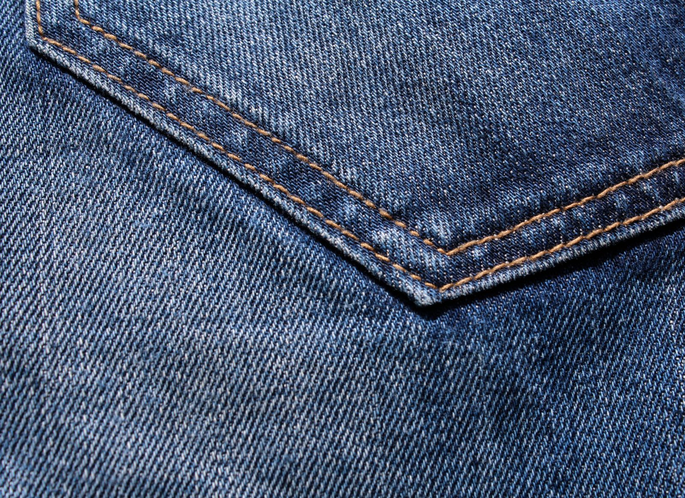

Ребрендинг
Стратегия, айдентика, навигация, оформление среды и система носителей.

Комплексное предложение по обновлению бренда, навигационной системы и digital-платформы ТРЦ.
01 · Контекст
Объект работает с 2012 года, входит в число крупнейших в своей зоне охвата: 65 000 м² GLA, 180 арендаторов, якоря «Ашан», «Киномакс», FunkyTown, паркинг на 2500 машино-мест. На уровне бренда «Премьер» пока ограничивается названием: без позиционирования, визуальной идентичности и единой навигации. Сайт также должен обновиться в структуре и дизайне.
02 · Проект
Стратегия, айдентика, навигация, оформление среды и система носителей.
UX/UI, структура, дизайн, разработка, CMS и необходимые интеграции.
Новая бренд-система становится визуальной основой сайта: цифровая среда учитывает айдентику с самого начала.
03 · Ребрендинг
Бренд-платформа фиксирует, чем «Премьер» является для аудитории и региона. Дальше на неё опираются вербальная система, логотип и tone of voice.
Суть бренда Предельно сжатая формулировка того, чем «Премьер» является для аудитории.
Позиционирование Лидер региона: 65 000 м² GLA, 180 арендаторов, якоря «Ашан», «Киномакс», FunkyTown, паркинг на 2500 машино-мест.
Смысл имени Что означает «Премьер» применительно к объекту и как эта идея прочитывается аудиторией, без смены названия.
Миссия Роль объекта в жизни города и области.
Ценности Не более четырёх, каждая с описанием того, как она проявляется в решениях.
Характер и tone of voice Архетип бренда и производный от него стиль коммуникации.
Портреты аудиторий Не менее четырёх сегментов с приоритизацией: посетитель, арендатор, пресса, соискатель.
Отстройка и легенда Чем объект сознательно не является на фоне конкурентов, и связный текст бренда для внешних и внутренних коммуникаций.
Вербальная система
Сопровождающая формулировка, задающая тип и масштаб объекта, с правилами употребления имени с дескриптором и без него.
Слоганы и ключевые сообщения проверяются на уникальность, благозвучность и правовые риски перед финализацией.
Навигационные и информационные надписи; социальные сети; объявления по системе оповещения; коммуникация в нештатных ситуациях.
Айдентика
Пять принципиально разных направлений на первой итерации. Одно финализируется в систему из восьми версий. Дизайн знака пока не разработан. Ниже показан принцип, по которому он будет проверяться.
Основной знак Словесно-графическая версия для главных носителей.
Горизонтальная Для широких форматов: бланк, шапка сайта, баннер.
Вертикальная Для узких и высоких носителей: пилон, стела.
Компактная Для ограниченного пространства носителя.
Знак без текста Для мелкого воспроизведения и иконок.
Монохром Для одноцветного воспроизведения и гравировки.
Инверсия Для тёмных и контрастных фонов.
Для мелкого размера Отдельно выверенная версия под минимальные размеры.
К знаку прилагаются правила применения: охранное поле, минимальные размеры под каждый тип носителя, недопустимые искажения, размещение на фото и сложном фоне.
Проверка масштаба знака
Схема демонстрирует метод проверки читаемости знака на четырёх дистанциях. Финальный знак и его пропорции определяются на этапе «Айдентика».
Фирменная система
Цвет Три уровня палитры: основная (не более трёх доминирующих цветов), расширенная для коммуникаций и сезонных задач, функциональная для кодирования уровней и зон. Значения фиксируются в Pantone, CMYK, RGB, HEX, а также RAL и NCS для плёнок, красок и покрытий носителей.
Типографика Основной и акцентный шрифт с полной поддержкой кириллицы; шкала размеров, интерлиньяж, трекинг и правила вёрстки для печати, среды и цифровых носителей.
Графическая система Модульная сетка и принцип построения композиций; паттерн, знаки, линии, формы для форматов носителей.
Пиктограммы Единый модуль на 7 категорий, плюс правила построения новых знаков силами заказчика в дальнейшем.
Результат ребрендинга
Аудит и исследование Аналитический отчёт, 2–3 гипотезы позиционирования и заключение по правовому аудиту имени.
Том 1 Бренд-платформа: позиционирование, суть бренда, tone of voice, аудитории, бренд-легенда.
Том 2 Руководство по идентичности: имя, дескриптор, знак, цвет, типографика, графика, пиктограммы, правила применения.
Том 3 Применение: решения по навигации, конструкциям и носителям объекта.
Передача PDF + редактируемые исходники, ссылки на приобретение лицензий, обучающий онлайн-семинар для команды ТРЦ, комплект материалов для подачи заявки на товарный знак.
Три тома служат рабочим инструментом команды ТРЦ и её подрядчиков. По ним дальше согласовываются макеты, носители и новые пиктограммы.
Пространство ТРЦ
Навигация объекта строится по четырём уровням, у каждого свой принцип размещения, модульная сетка носителя и схема информационного наполнения.
Подъездные пути, въезды, парковка, пешеходные подходы.
Общие схемы объекта, указатели ключевых зон, точки принятия решения.
Направления, категории, ориентиры, вертикальные связи.
Обозначения помещений, сервисные и служебные указатели, доступность.
Конструкция носителей допускает замену наименований сменными вставками, без демонтажа и переизготовления.
Наружные конструкции: 5 типов
На фасаде здания
Отдельно стоящая, у подъездов
Обозначение входов
Указатели на территории объекта
Навигация и обозначения парковки
Габариты, пропорции и способ подсветки прорабатываются в объёме, достаточном для постановки задания проектной организации.
Фасад: текущее состояние
Носители
Наружная реклама
Печать
Пространство объекта
Деловые носители
Плюс сетка форматов и правила вёрстки контента, общие для всех цифровых носителей.
04 · Новый сайт
Дизайн и структура сайта учитывают айдентику с первого макета.
Почему сейчас
С 2019 года трафик ТЦ в России снизился с 486 до 356 посетителей в сутки на 1 000 м². В первом полугодии 2026 падение продолжилось: −2% год к году по стране.
К концу 2025 года Россия вошла в число стран с самой высокой долей онлайн‑торговли. Сайт должен помогать посетителю выбрать событие, сервис или другой повод для визита.
Вакантность в Москве выросла с 9,7% на конец 2025 года. Качество сайта влияет и на работу с арендаторами: он показывает возможности продвижения и уровень сервиса ТРЦ.
Fashion сжимается: доля одежды снизилась с 38% до 35%, а покупки одежды и обуви упали на 10%. Еда, развлечения и фитнес заняли 17,5% площадей, прибавив 3 п.п.
Поиск по бренду, этаж и маршрут до магазина доступны как сквозной сценарий на любой странице.
Визиты из AI‑ассистентов выросли на 70% за год. SSR и Schema.org помогают попадать в ответы со ссылками на источники.
Наш взгляд
Макет демонстрирует принцип организации интерфейса на новой айдентике. Визуальное решение согласовывается на этапе дизайн‑концепции.
Афиша и даты сразу на главной.
Актуальные предложения из CMS.
Московское ш., 21 · Рязань
Афиша, дата и одно ясное действие вместо карусели баннеров.
До карточки магазина не больше двух кликов с любой страницы.
Арендаторы, события и сервисы собираются на одном модуле.
Референсы рынка
Destination на первом экране, ближайшие события и сценарии Shop / Eat & Drink / See & Do.
60 центров на одной платформе: выбор объекта, приложение и архитектура под сеть.
Режим работы, адрес, схема ТРЦ и маршрут вынесены на главную.
Навигация по сценариям, каталог с фильтрами, кино и программа лояльности.
Применимые продуктовые решения:
событийная главная, сквозная навигация, архитектура под сеть.
Визуальная система сайта
Правила интерфейса поверх бренд-системы: как знак, цвет и типографика работают конкретно в вёрстке сайта.
Заголовок несёт настроение и заменяет декоративную графику.
Ежедневно
Одежда и обувь · 2 этаж
10:00 — 22:00Текст · touch target
Типографика Один гротеск с полной кириллицей; заголовки 56–72 px, основной текст 18 px, на мобильных минимум 16 px.
Цвет Палитра бренда плюс нейтральная база; контраст текста не менее 4,5:1 (не менее 3:1 для крупных заголовков).
Сетка 12 колонок на desktop, 8 на tablet, 4 на mobile; шаг отступов кратен 8 px.
Доступность Фокус на интерактивных элементах, touch targets от 44×44 px и обязательный reduced motion.
Технический разбор
Четыре вопроса, которые важно согласовать до начала работ по сайту.
Приоритет LCP, постер вместо автозапуска, AVIF/WebP, CDN и жёсткий бюджет скриптов. Показатели фиксируем отдельно для mobile и desktop.
Нужны формат планировок, правила привязки арендаторов и регламент обновления. Закладываем SVG‑слои и связь с каталогом через CMS.
Доступность определяет контраст, размеры, фокус и поведение анимаций. Проверяем на дизайн‑концепции, не в конце вёрстки.
Срок реален при поблочном согласовании и зафиксированном графике передачи данных, планировок и фотоконтента.
Архитектура
Кастомная админка под объект, этажи, арендаторов, события и услуги. API без лицензионных платежей; решение дороже на старте и требует поддержки разработчика.
Привычная среда для маркетинга и SMM, быстрый старт и широкий рынок поддержки. Нужна строгая дисциплина плагинов.
Российский вендор, права доступа и история изменений. В headless‑режиме Битрикс отдаёт данные по REST, а Next.js отвечает за пользовательский интерфейс.
05 · Реализация
Ребрендинг и сайт идут параллельно там, где это возможно. Каждый этап ребрендинга завершается контрольной точкой: согласованием результата.
Общий срок проекта: 17 недель.
Аудит цифровых точек контакта, интервью с командой, проверка правовой охраны обозначения. Результат: аналитический отчёт, 2–3 гипотезы позиционирования, заключение по правовому аудиту имени.
Суть бренда, позиционирование, содержание имени, миссия, ценности, характер, портреты аудиторий, бренд-легенда. Результат: утверждённый документ бренд-платформы, основа для следующих этапов.
Имя, дескриптор, слоган, суббренды. Логотип: 5 направлений → система из 8 версий. Цвет, типографика, графика, пиктограммы. Результат: утверждённое направление знака, вербальные правила, фирменная система.
Наружные конструкции, навигация в 4 уровнях, цифровые и печатные носители. Результат: решения по носителям объекта, готовые к производству.
Три тома документации, шаблоны, передача редактируемых исходников и ссылок на приобретение лицензий, обучающий онлайн-семинар для команды ТРЦ, материалы для подачи заявки на товарный знак.
10 + 5 + 35 + 22 дня трудоёмкости по этапам, календарный срок около трёх месяцев.
Бриф, аудит бизнеса и аудитории, конкуренты, позиционирование, Tone of Voice, структура, пользовательские пути, ТЗ. Результат: согласованные структура сайта и техническое задание.
Чистовой контент, семантическое ядро, метатеги, SSR/SSG, sitemap, Schema.org и подготовка к индексации. Результат: чистовые тексты и SEO-основа, готовые к вёрстке.
Мудборд, дизайн-концепция, адаптивные интерфейсы, UI-kit, руководство по анимациям, проверка доступности. Результат: утверждённая дизайн-концепция и UI-kit.
Компонентный фронтенд, логика CMS, API, интеграции, поиск, формы, каталоги, события. Результат: рабочий фронтенд с интеграцией CMS на тестовом стенде.
Кроссбраузерная проверка, оптимизация, тестовый стенд, документация, обучение, месяц поддержки после запуска. Результат: сайт на проде, документация и комплект доступов.
06 · Стоимость
Срок 17 недель. Сайт, производство, монтаж и ведение соцсетей не входят. В стоимость входят две итерации правок, далее по отдельной оценке.
Трудоёмкость специалистов по этапам: 10 + 5 + 35 + 22 дня. Этапы частично идут параллельно; календарный срок около трёх месяцев. Детальный состав указан ниже.
Дополнительно, при возникновении соответствующей необходимости: лицензии на коммерческие шрифты по фактической стоимости выбранной лицензии; командировочные расходы отдельно, по предварительному согласованию с заказчиком.
Разработка сайта: детализация
Стоимость сайта округлена до 1 512 000 ₽.
Анализ конкурентов; позиционирование, Tone of Voice и контентная структура; тексты главной, разделов «Арендаторы», «Еда», «События / Акции / Новости», «Как добраться / Парковка», «Услуги ТЦ», «Для арендаторов», «Для прессы / партнёров», контактов и информационных разделов; финальная редактура.
Семантическое ядро и исследование до 10 конкурентов; SSR/SSG, ЧПУ, robots.txt и sitemap.xml; meta title, description, Open Graph, canonical; Schema.org; WebP/AVIF, lazy loading и оптимизация шрифтов, изображений и скриптов; подготовка к индексации.
UX/UI в коде и интерактивные HTML‑прототипы; дизайн и разработка карты магазинов; Next.js / React / TypeScript; общие компоненты, шаблоны, навигация, каталог с фильтрами, карточки, новости, акции, события, поиск, формы и сервисные разделы; mobile‑first; интеграция с CMS/API; состояния загрузки и ошибок; Next/Image; кроссбраузерное тестирование.
Тестовый стенд; логика CMS; API для Next.js; конфигурация сервера и базовая безопасность; GitHub; документация по развёртыванию и API, руководство администратора; перенос проекта.
В течение пяти рабочих дней после договора. Срок начинается после оплаты и передачи исходных материалов.
По факту приёмки: исходники проекта и дизайна, документация по API и развёртыванию, руководство администратора и комплект доступов.
07 · Опыт Serenity

Новый бренд и сайт для дистрибьютора звукового оборудования.
Смотреть кейс ↗
Имя, позиционирование и фирменный стиль для сети магазинов одежды.
Смотреть кейс ↗
Айдентика и сайт-каталог для дистрибьютора плитки в Германии.
Смотреть кейс ↗
Имя, стиль и интернет-магазин мебели.
Смотреть кейс ↗«В рамках фирменного стиля мы получили несколько вариантов логотипа и стиль, отражающий направление деятельности компании в реалиях немецкого рынка»
Василий Шефер, CEO, Schäfer FliesenДоверие
Фиксируем цели проекта, работаем совместно с командой клиента и принимаем решения по результату.
Нас отмечает индустрия
Разработка бренд‑стратегий в России
Digital‑маркетинг для e‑commerce · DarkRain
Самые награждаемые агентства по маркетингу · Санкт‑Петербург
Самые награждаемые агентства по маркетингу
Самые награждаемые маркетинговые агентства
Разработчики сайтов на Tilda
Техническая поддержка веб‑проектов
Разработчики сайтов в России
Корпоративные digital‑решения · Санкт‑Петербург
Брендинговые агентства · Санкт‑Петербург
Брендинговые агентства России
Разработчики лендингов в России
Брендинг для промышленных предприятий
Цифровая трансформация бизнеса
Serenity × Премьер
За счёт комплексного подхода к стратегии, брендингу и продвижению.
Позвонить в Serenity